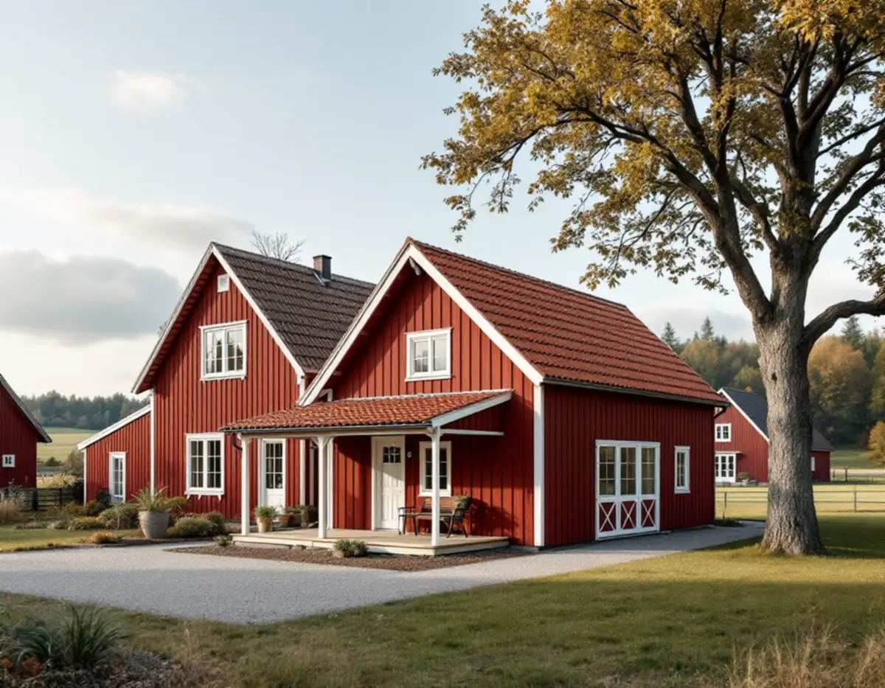
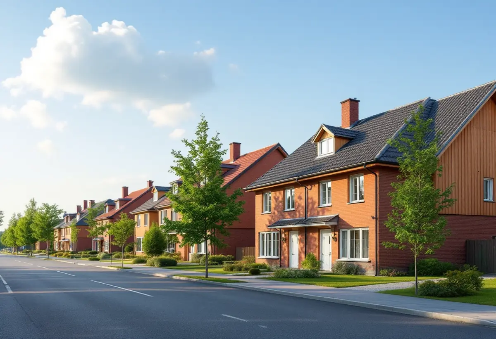
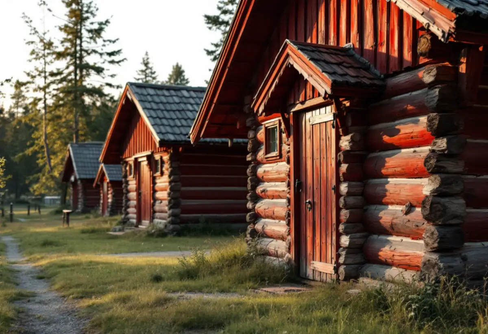

Platsbesök
Befintliga byggnader mäts och potten räknas ut.
Från villagatorna i Märsta och Rosersberg till gårdarna i dalgången mellan Odensala och Hova – i Sigtuna styr både Arlanda och kulturmiljöerna vad som kan byggas. Geal Entreprenad AB bygger komplementbostadshus nyckelfärdigt och tar reda på vad som gäller för din tomt innan huset ritas.

Sigtuna kommun förklarar den gemensamma potten med två exempel. Inom detaljplan: står det redan en friggebod på 15 kvadratmeter och ett attefallshus på 30 kvadratmeter på tomten kan du inte bygga något mer utan bygglov. Utanför detaljplan: står det en friggebod på 15 kvadratmeter och ett garage på 50 kvadratmeter är potten också full. Gränserna är 45 kvadratmeter inom plan och 65 utanför.
Därtill ska huset vara högst 30 kvadratmeter och 4 meter i nock inom detaljplan eller 50 kvadratmeter och 4,5 meter utanför, vara mindre än huset det kompletterar och stå inom tomten. Närmare tomtgränsen än 4,5 meter krävs grannens skriftliga medgivande. Kommunen påminner om att en anmälan behövs när vatten, avlopp eller ventilation installeras eller när brandskyddet påverkas, även när bygglov inte krävs.

Arlanda flygplats ligger i Sigtuna kommun och är ett riksintresse enligt miljöbalken, både för dagens verksamhet och för möjligheten att utöka den. Det område som påverkas av flygbullret kallas influensområdet. Om du vill bygga nytt eller göra en tillbyggnad där tar kommunen kontakt med Swedavia för ett utlåtande innan den fattar beslut om bygglov.
När bygg- och miljönämnden yttrar sig på ansökningar om bygglov och förhandsbesked bedömer den bland annat bullersituationen, hur avloppet ska lösas och markens radonhalt enligt en markradonutredning. Kommunen skriver att närhet till en stor väg, järnväg eller flygbuller kan begränsa möjligheten att bygga, men att byggnation i vissa fall kan accepteras med bullerbegränsande åtgärder som avskärmning eller isolering. Behöver ditt hus bygglov tar vi med de frågorna från början.
Kommunen har en checklista i sex steg. Tomtkartan till situationsplanen laddar du ner gratis som pdf utan inloggning. Fasadritningen ska visa alla fasader med nya och befintliga marknivåer, material, kulörer och väderstreck. Planritningen ska ha möblerat entréplan som är tillgängligt för personer med nedsatt rörelseförmåga och vara måttsatt så att arean kan räknas ut. Sektionen visar våningshöjd, golvnivåer, takvinkel och marknivå vid entréer.
Konstruktionsritningar ska redovisas för grund, stomme och takkonstruktion, med tekniska snitt genom bjälklag, väggar och yttertak. En teknisk beskrivning förklarar brandskydd, uppvärmning, ventilation, energi och säkerhet. Förslag till kontrollplan lämnas in både vid bygglov och anmälan. Vi tar fram hela underlaget, så att det är klart när ärendet skickas.
Dalgången mellan Odensala och Hova har enligt kommunens riktlinjer spår av mänsklig aktivitet i mer än 1 500 år. Riktlinjerna, antagna i december 2020, använder ordet gårdshus som samlingsnamn för uthus, ekonomibyggnader och komplementbyggnader som hör till en gård, och beskriver bevarade rödmålade uthus, knuttimrade uthus från 1800-talets andra hälft och gårds- och uthus placerade vinkelrätt mot varandra.
Kommunen skriver att du kan behöva bygglov för komplementbyggnader inom ett kulturhistoriskt värdefullt område och tar emot foton från samtliga väderstreck för att göra en bedömning av fastigheten. Dalgången är inte planlagd med detaljplan, utom Herresta by med planer från 2011 och 2013, och när marken inte är planlagd föregås bygglov vanligen av ett förhandsbesked. Ett nytt hus på en sådan gård ritar vi så att det inordnar sig bland de befintliga. Om villornas tak och fasader i kommunen kan du läsa under takrenovering i Sigtuna och byggföretag i Sigtuna. Lagens mått finns i reglerna för attefallshus.

Befintliga byggnader mäts och potten räknas ut.
Detaljplan, kulturmiljö och om tomten ligger i Arlandas influensområde.
Situationsplan, fasader, plan, sektion och konstruktion enligt checklistan.
VA, ventilation och brandskydd anmäls och vi väntar på startbesked.
Grund, stomme, tak och installationer fram till nyckelfärdigt.
Huset används när slutbeskedet har kommit.
Skatteverket räknar upp arbeten som inte ger rotavdrag på ett småhus, bland annat att bygga ett helt nytt hus, en friggebod, ett garage eller en liknande fristående byggnad, och att skriva bygglovshandlingar eller anlita en arkitekt. Ett komplementbostadshus är en ny fristående byggnad, så kostnadsförslaget räknas utan avdrag.
Husets storlek och planlösning, kök och badrum, grunden, avloppslösningen och om huset behöver extra ljudisolering eller anpassning till en gårdsmiljö. Efter ett gratis platsbesök får du ett skriftligt kostnadsförslag.
Komplementbostadshus på tomten.
Attefallshus →Takbyte, takbesiktning och plåtarbeten.
Takläggare i Sigtuna →Sigtuna stad, Märsta och Arlanda.
Takrenovering i Sigtuna →Anmälan, fläkt och dusch i stället för badkar.
Badrumsrenovering i Sigtuna →Nytt hus, gästhus och större tomt.
Byggföretag i Sigtuna →Gatufasad, gårdsfasad och uthus i stadskärnan.
Fasadmålning i Sigtuna →Puts i stadskärnan, panel i dalgången.
Fasadrenovering i Sigtuna →Arlanda, ljudisolering och fönster i Sigtuna.
Fönsterbyte i Sigtuna →Bevarandeplanen, gammalt glas och fönsterkulörer.
Fönsterrenovering i Sigtuna →Golv på platta, fuktmätning och radon.
Golvläggare i Sigtuna →Stadskärnan, Märsta och Rosersberg.
Målare i Sigtuna →Plåttak, rännor och beslag i Sigtuna.
Plåtslagare i Sigtuna →Staket, dörrar och gårdshus i stad och dalgång.
Snickare i Sigtuna →Lov, checklista och gårdarnas tegel.
Takbyte i Sigtuna →Ny tapet i äldre trähus.
Tapetsering i Sigtuna →Arlanda, uterum och handlingarna.
Tillbyggnad i Sigtuna →